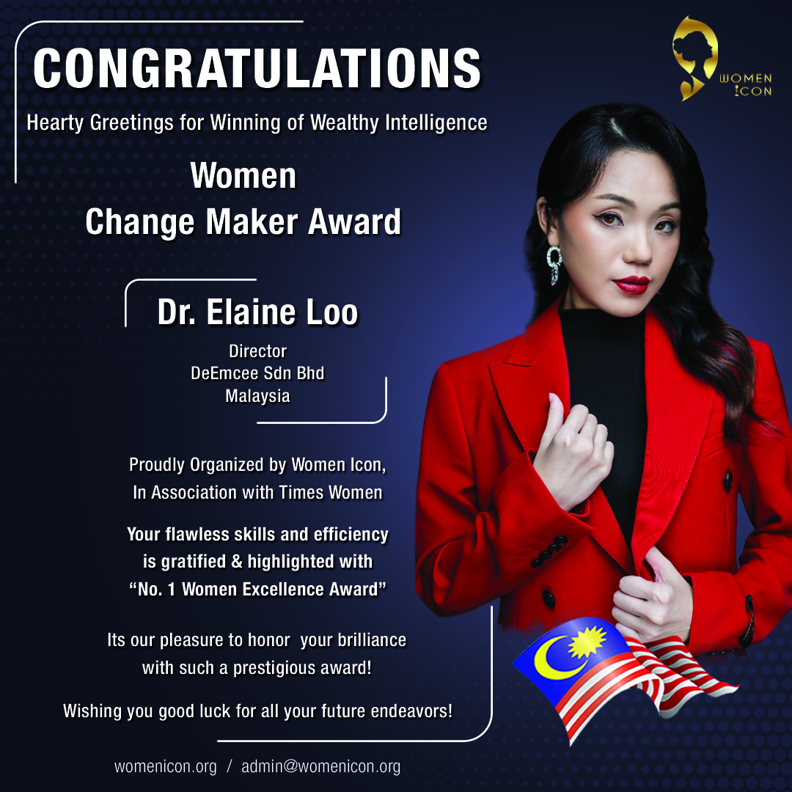

The 5Q MindVehicle™ Framework exists because the future demands
more than IQ. Each program Dr. Elaine has founded is living proof
of what happens when families, educators, and leaders are equipped
with 5Q.
Year 2010 born to spark youth leadership, ProMizzion creates
environments where teenagers transform confidence into
character. By facing real challenges with guided mentorship,
they learn that leadership is not about position — it’s about
action and meaning.
Milestone
9 seasons of Teen Talk with 30+ Public Advocates — empowering
youth to speak to thousands.
Student represented TEDx Youth Malaysia.
30 graduates of our 5–8 year program, many now pursuing their
life mission worldwide.
2,000+ students impacted through leadership, stage &
confidence-building training.
10,000+ impactful coaching hours delivered by passionate
coaches.
100+ hours of student involvement in community service,
charity work, workshops and upskill learning.
Received Asia Excellence in Quality Education Award (2024).
Outcomes
Students grow into resilient, articulate leaders who carry their
strengths into both school and society.

“Lead Beyond.”
DeEmcee — Children’s Public Speaking
DeEmcee founder’s message.
Story
In year 2018, DeEmcee is an award‑winning public speaking
franchise that transforms stage fright into stage presence.
Children learn to discover their voice, speak with courage, and
grow through both structured yet creative thematic setting.
Milestone
2017 – Official Launch:Established DeEmcee as a structured confidence speaking
programme with a standardised multi‑level grading
systemOpened the first branch in Malaysia.
2020 – Reached 10 branches nationwide:
Opened the first branch in East Malaysia (Sarawak).
2022 – Franchisor Registration:
Officially registered as a franchisor under Malaysian
franchise law.
2023 – Programme Milestones & Recognition:Marked the first 100 graduates completing the full 6‑grade
level programme.Named a Top 3 Finalist for Emerging Franchisor of the Year
by the Malaysia Franchise Association.
2024 – Expansion & Awards:Achieved the 30‑branch milestone across Malaysia and
abroad.Awarded the Most Trusted Excellence Award in
Indonesia.Named a Top 3 Finalist for Emerging Franchisor of the Year
by the Malaysia Franchise Association.Surpassed 150 certified confident and lively
educators.
2025 – Regional Growth & Impact:Opened the first overseas branch in Brisbane,
Australia.Opening the first branch in Singapore, Philippines, and
Thailand.Embarking on a 30‑school tour to impact 10,000 students
nationwide.Organized a total of 100+ Challenge Day sessions in malls
for real public speaking exposure.
Outcome
Children gain confidence, parents witness transformation, and
communities raise a generation ready to speak with clarity and
courage as foundation of global citizenship.
KidZutopia — Early Childhood Learning
“Nurturing curiosity and courage in every child.”
Story
Early childhood sets the tone for lifelong learning. KidZutopia
designs sensory-rich, play-based environments that help young
children build empathy, resilience, and joyful curiosity.
Achievements & Awards
Endorsed by CCE Finland.
Winner of Best MamaPapa Recognition.
Recognized for innovative child‑centered approaches in early
learning.
Outcomes
Children fall in love with learning, enter school with
confidence, and thrive emotionally and socially.
Parents First — Parental Education & Leadership
Story
Parenting is the first and most important form of leadership.
Parents First equips mothers, fathers, and even corporate
leaders with cognitive science‑informed, practical tools to
strengthen their own 5Q MindVehicle — advancing humankind.
Achievements & Milestones
2021 – Early Vision:
Scientific and artistic parenting educationlaunched 4Q framework
2022 – Expansion:
Introduced 5Q Course (adding UQ)Listed in Britishpedia Successful People in Malaysia.
2023 – Professional Certification & Awards:First Professional Certification in Parental Education
(University Malaya‑accredited).ASEAN Professional Award.BabyTalk MamaPapa Award.
2024 – International Accreditation & Corporate
Training:5Q Accreditation by CCE Finland.HRD Corp‑approved training provider.Launched 6Q Quantum Communication & Social Science
Course.
2025 – Global Excellence:CCE Finland Best Curriculum Design Innovation Award.CCE Finland Best Skill Development Centre Award.6Q Professional Diploma accredited by CMA (UK).
Outcomes
Adults feel empowered, children thrive, and families replace
pressure with resilience and joy.
Parents First — learning that transforms families.
Why It Matters
These programs form an ecosystem of transformation — blending
science, creativity, and human connection so the next generation
can turn inner potential into global impact.